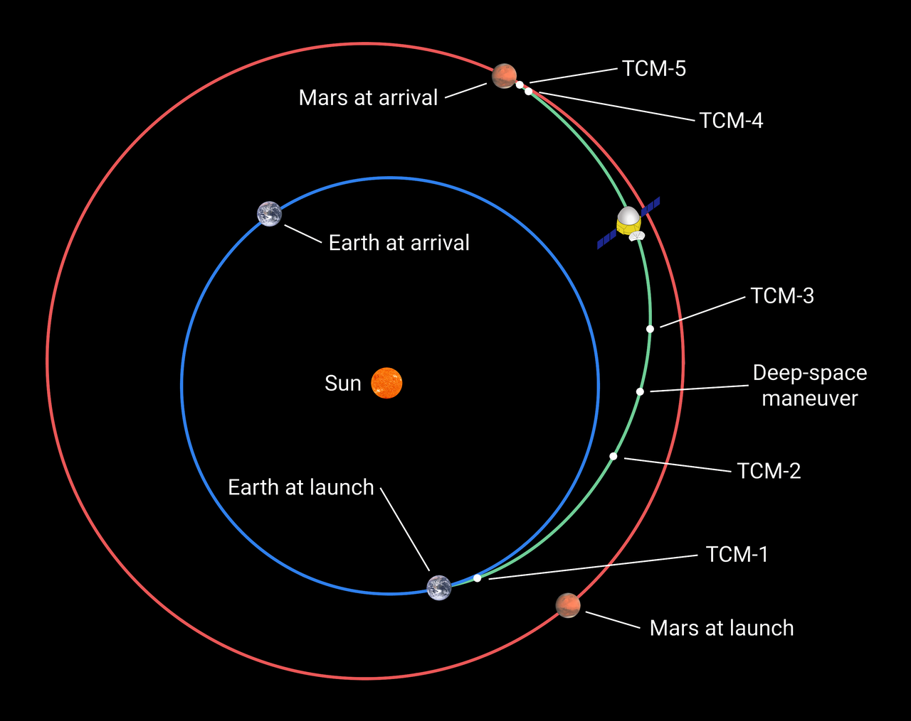
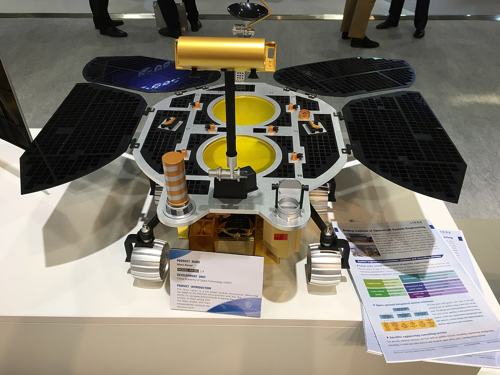
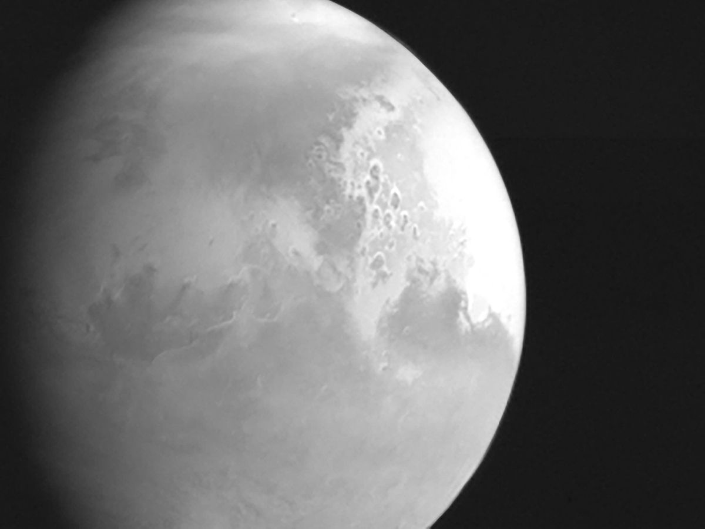

«Тяньвэнь-1»
«Тяньвэнь-1»— китайская автоматическая межпланетная станция (АМС), состоящая из орбитального аппарата (спутника Марса) и спускаемого аппарата, полезной нагрузкой которого является шестиколёсный марсоход Чжужун . Запуск «Тяньвэнь-1» был осуществлён 23 июля 2020 года с помощью тяжёлой ракеты-носителя «Чанчжэн-5». АМС «Тяньвэнь-1» достигла Марса 10 февраля 2021 года. 14 мая 2021 года спускаемый аппарат совершил мягкую посадку на Равнине Утопия. АМС «Тяньвэнь-1» была создана в рамках первой собственно китайской программы исследования Марса, официально принятой в 2016 году. Её главным конструктором является Чжан Жунцяо.
Задачи
Основной задачей проекта «Тяньвэнь-1» является глобальное обследование Марса с орбитального аппарата и детальное изучение одной области с помощью марсохода, включающие картирование морфологии и геологической
структуры планеты, изучение характеристик поверхностного слоя и распределения водяного льда в нём, анализ состава материалов поверхности,
измерение параметров ионосферы планеты, электромагнитного и гравитационного полей и получение информации о климате Марса.
Проект приурочен к юбилею — 100-летию Коммунистической партии Китая, которое торжественно отмечалось 1 июля 2021 года.
Ход миссии
22 июля 2020 года АМС запущена ракетой-носителем «Чанчжэн-5» с космодрома Вэньчан на северо-восточном побережье острова Хайнань на юге Китая, в провинции Хайнань.
14 мая 2021 года спускаемый аппарат с посадочной платформой и марсоходом «Чжужун» отделился от орбитального модуля. Примерно через три часа спускаемый аппарат вошёл в атмосферу Марса со скоростью 4 800 м/с.
Затем скорость спускаемого аппарата снизилась путём последовательного использования аэродинамического торможения и парашюта. Полное торможение и мягкая посадка проводилось посадочной платформой,
которая оснащена ракетными двигателями с регулируемой тягой. Через 80 секунд после включения двигателя платформа зависла на высоте около 100 м над поверхностью Марса.
Бортовая система оценки рельефа и уклонения от препятствий выявила безопасное место,
и посадочная платформа, используя двигатели бокового смещения тягой 250 и 25 Н, завершила спуск и выполнила посадку на четыре опоры с вертикальной скоростью не более 3,6 м/с. Точное время посадки 23:18 UTC.
22 мая 2021 года в 02:40 UTC — 05:40 мск марсоход «Чжужун» успешно съехал по трапу с посадочной платформы.
19 мая 2021 года марсоход «Чжужун» прислал первые снимки с красной планеты. На них видны элементы ровера, стоящего на посадочной платформе, а также ближайшие окрестности Марса, покрытые песком и мелкими камнями. Визуальный осмотр попавшего в кадр оборудования подтверждает, что солнечные панели и антенна марсохода раскрылись успешно. 11 июня 2021 года Китайское национальное космическое управление (CNSA) опубликовало первую серию научных изображений с поверхности Марса, включая панорамное изображение Марса с места посадки, и групповое фото Чжужуна и посадочного модуля Тяньвэнь-1 сделанное беспроводной камерой оставленной неподалеку. Панорамное изображение состоит из 24 отдельных снимков, сделанных камерой NaTeCam до того, как марсоход съехал с платформы. Изображение показывает, что топография и обилие горных пород возле места посадки соответствовали предыдущим ожиданиям относительно типичных южных мест Равнины Утопия с небольшими, но широко распространенными камнями, узорами белых волн на песке и грязевыми вулканами.
27 июня 2021 года CNSA опубликовало ещё несколько фотографий Марса, новую панораму Равнины Утопия, а также видео движения «Чжужун» на поверхности Марса со звуком, издаваемым при движении марсохода, записанным его инструментом Марсианской Климатической Станцией (MCS).
Также было объявило, что на момент публикации «Чжужун» проехал по Марсу расстояние в 236 метров.
11 июля 2021 года CNSA опубликовало новое обновление о ходе миссии, было сообщено, что на момент публикации 12 июля 2021 года «Чжужун» посетил парашют и заднюю часть, сброшенные на поверхность Марса во время его приземления 14 мая. «Чжужун» проехал расстояние в 410 метров, фотографируя по пути особенности ландшафта и используя научные приборы для анализа атмосферных и магнитных условий, также марсоход провел макросъемку марсианских камней имеющих бирюзовый оттенок.
12 июля 2021 года марсоход «Чжужун» посетил место падения парашюта и крышки посадочного модуля, сброшенных на поверхность Марса во время посадки.
30 июля 2021 года CNSA опубликовало несколько новых фотографий с Марса и рассказало о ходе миссии, марсоход «Чжужун» завершил исследование двух песчаных дюн, и теперь начинает двигаться на юг, пока не достигнет более сложной местности, интересной для изучения. На момент публикации марсоходом было пройдено расстояние в 708 метров.
На 6 августа 2021 года марсоход «Чжужун» проехал 808 метров.
1 января 2022 года Китай по случаю нового года опубликовал новые снимки Марса с марсохода «Чжужун» и орбитального аппарата «Тяньвэнь-1». В общей сложности к этому моменту за время своей работы марсоход и орбитальный аппарат передали на Землю уже более 560 гигабайтов информации о Марсе. 24 марта 2022 года Китайское национальное космическое управление опубликовало снимки поверхности Марса с АМС «Тяньвэнь-1» разрешением 0,5 метра. На них видна пыльная буря, а также следы марсохода «Чжужун», который к тому времени проработал 306 марсианских дней, пройдя 1784 метра.
Галерея


.webp)
